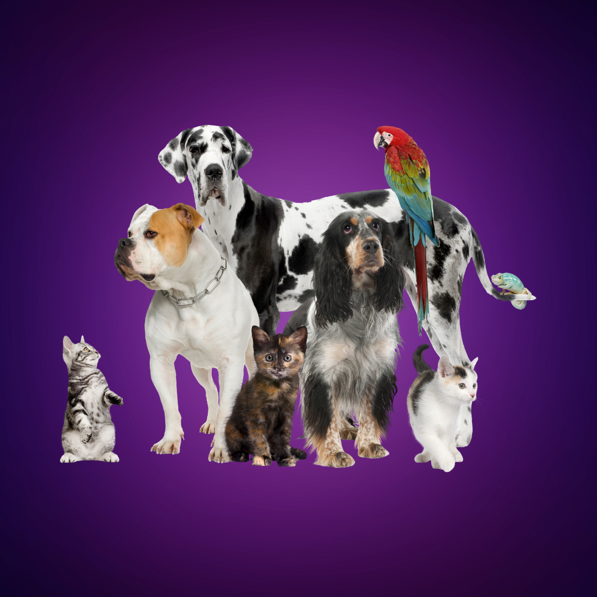
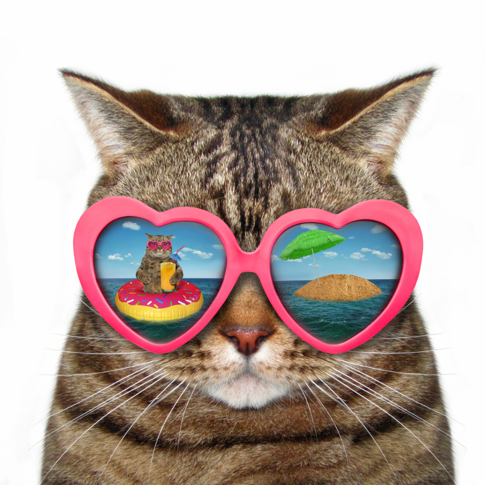
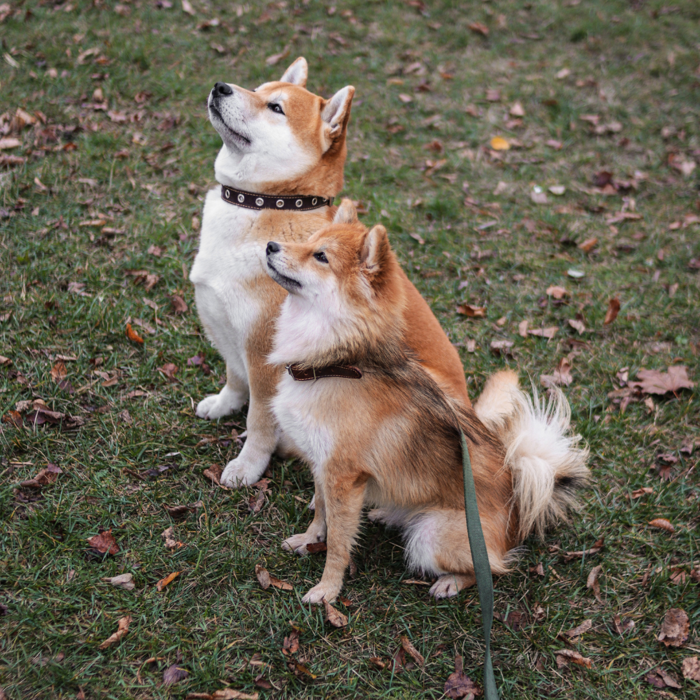
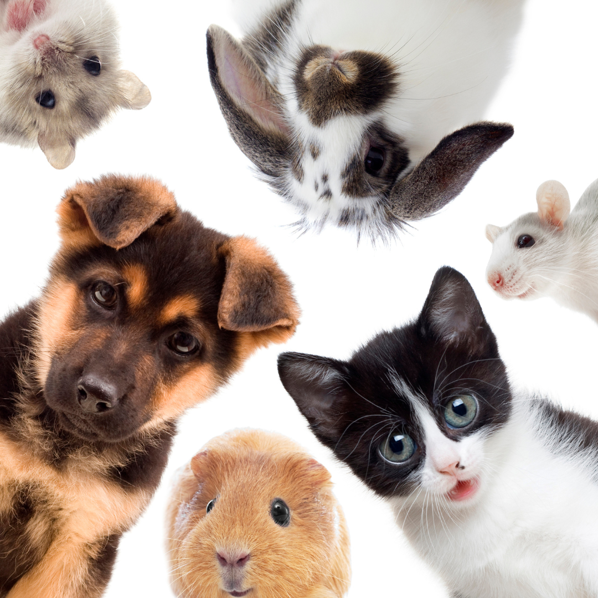

Inisiatif vaksinasi yang bertujuan untuk melindungi hewan peliharaan
dari penyakit-penyakit yang dapat dicegah melalui vaksinasi.
Dalam kampanye ini, kami menyediakan layanan vaksinasi gratis untuk
hewan peliharaan, termasuk vaksin rabies dan vaksin penting lainnya.
Dengan memberikan akses mudah dan terjangkau kepada pemilik hewan,
kami berharap dapat meningkatkan kesadaran akan pentingnya vaksinasi
dan membantu mencegah penyebaran penyakit di antara hewan peliharaan
dan masyarakat. Bergabunglah dengan kami dalam Protect-a-Pet Campaign
untuk melindungi kesehatan dan kebahagiaan hewan peliharaan Anda!
Bandung Indah Plaza, Bandung

Minggu, 12 Mei • 14:00 WIB
Furry Fashion Show
Acara yang menyenangkan di mana anda dapat menampilkan gaya unik hewan
peliharaan anda dalam fashion show khusus hewan peliharaan.
Selain itu, acara ini juga akan menampilkan kontes kostum terbaik yang
pasti akan membuat hewan peliharaan Anda bersinar.
Dengan berbagai kategori dan hadiah menarik,
Paris Van Java, Bandung

Sabtu, 20 April • 13:30 WIB
Meow Meetup
Acara seru bagi pecinta kucing untuk berkumpul, berbagi cerita, dan
memperkenalkan kucing kesayangan kepada teman-teman kucing lainnya.
Di sini, Anda dapat mendiskusikan perawatan kucing, mendapatkan tips dari
ahli, dan berinteraksi dengan berbagai jenis kucing.
Dengan suasana santai dan penuh cinta.
Metro Indah Mall, Bandung

Minggu, 28 April • 09:00 WIB
Doggy Day Out
Nikmati Doggy Day Out, acara seru untuk anda dan anjing kesayangan.
Bawa anjing anda untuk berinteraksi dengan anjing lain dalam lingkungan
yang aman. Ada kelas pelatihan dan pertunjukan untuk anda nikmati bersama anjing anda.
Ajak anjing anda bermain dan bergabunglah dengan kami!
Summarecon, Bandung
Minggu, 24 Mei • 07:00 WIB
Fur-tastic Fun Run
Acara lari seru untuk Anda dan hewan peliharaan kesayangan.
Berlari atau berjalan bersama dalam rute tertentu menjaga kebugaran
Anda dan hewan peliharaan. Memberi kesempatan berinteraksi dengan
komunitas pecinta hewan. Cara sempurna menikmati
waktu bersama hewan peliharaan sambil mendukung gaya hidup sehat.
Gedung Sate Bandung

Senin, 6 Juni • 08:00 WIB
Paw-lentine's Day Celebration
Paw-lentine's Day Celebration adalah acara spesial untuk merayakan
kasih sayang anda dengan hewan peliharaan. Nikmati foto bersama,
permainan interaktif, dan hadiah-hadiah spesial.
Dengan suasana hangat dan penuh cinta, acara ini adalah kesempatan
sempurna untuk membuat
kenangan manis bersama hewan peliharaan anda.
Cihapit, Bandung
Sabtu, 18 Mei • 11:00 WIB
Pet Health Check
Kami menyediakan layanan kesehatan hewan peliharaan gratis,
termasuk pemeriksaan, vaksinasi, dan konsultasi dengan dokter hewan.
Tujuan kami adalah meningkatkan kesadaran akan perawatan kesehatan hewan
peliharaan dan memastikan
hewan peliharaan Anda tetap sehat dan bahagia.